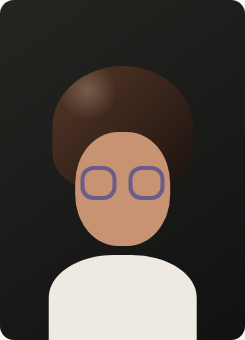

第一次：中发层次
边界变化明显但不突兀，适合确认自己能不能接受整体层次感。
第二次结果已完成
可保存这一步只保存到历史结果。常用形象会在下一步单独询问，不会自动替你决定。

保留中发长度，把层次和蓬松感调轻，比第一次更接近日常可执行版本。
两次结果对照
第一次：中发层次
边界变化明显但不突兀，适合确认自己能不能接受整体层次感。
第二次：日常轻层次
推荐保存更像现实里可以马上沟通的版本，适合当作本次探索的主要参考。
保存前先确认
第一次更像“看到变化”，第二次更像“明天可以拿去沟通”。
这次保存哪一个？
默认保存第二次，你也可以改存第一次。
保存到历史结果
保存到历史结果后，你可以之后回看两次探索的差异。常用形象会在下一步单独询问，不会在这里自动保存。
原型状态
用于验证保存中、已保存和失败状态。